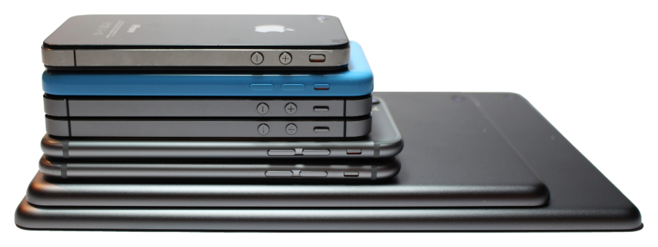

--- 
layout: default
title: iRepair4U Services

reset: reset.css
style: style.css
secondary_style: secondary_style.css

text: services_text
---

<!-- service page content -->

<div class="background-image">
    
</div>

<section id="services-page">

    <div class="container">
        <div class="single-column-column">

            <div class="eight-column-width">
                <h1 class="fs-section-title fw-semi-bold text-center"> SERVICES </h1>
            </div>

        </div>
    </div>

    <div class="container">
        <div class="single-column-column">

            <div class="nine-column-width padding-block-small">

                <!-- liquid markup iterates over a list of service segments. Gets the services within as well as their descriptions -->
                <!-- liquid also gets an id associated with service items to associate with footer links -->

                {% for entry in site.data[page.text] %}
                    <h3 id="{{ entry.section_id }}" class="fs-title-small fw-bold padding-block-small"> {{entry.section }} </h3>
                    {% for service in entry.services %}
                        <p id="{{ service.id }}" class="fs-column fw-bold padding-block-smaller"> ● {{ service.service }}</p>
                        <p class="fs-column fw-regular">  {{ service.description }} </p>
                    {% endfor %}
                {% endfor %}

            </div>
            
        </div>
    </div>

    <!-- Banner and image for bottom of service page -->

    <div class="container">
        <div class="single-column-column">

            <div class="twelve-column-width">
                <div class="nine-column-width padding-block-medium">
                    <h2 class="fs-title fw-semi-bold text-center">Don't see what you are looking for? No worries! Just give us a call.</h2>
                </div>

                <div class="ten-column-width">
                    
                </div>

            </div>

        </div>
    </div>

</section>